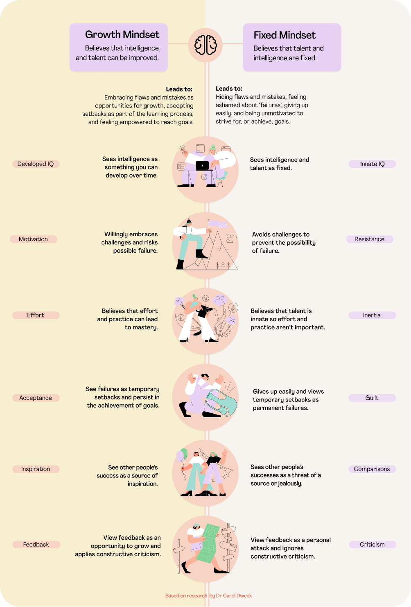

Neuroplasticity and Growth Mindset
Neuroplasticity
Neruo = brainplasticity = mouldable
Neroplasticity = mouldable-brain!
Neuroplasticity is the brains ability, mould and change shape throughout your life. Your brain changes shape when you learn something new, practice a new skill, feel an emotion or think in a specific way. It causes your brains neurones to fire and create new connections within your brain.
These connections are like roads, and the more traffic is on that road, the wider it gets. When your practice a skill where there are strong connections/wide roads, it feels like second nature! Similarly when connections in your brain aren’t being used, then the connection/road becomes weaker/narrower. Neruoplasticity is relevant to learning, because if we want to learn a new skill such as coding and reshape our brain then you need to actively engage in practicing coding and learning new techniques to strengthen your brains connections until it become second nature.
Increase neuroplasticity When I learn a new coding concept, I will often read or watch the exact same concept from a different article or video. Having a concept repeated to you that is worded differently or displayed in another form on a video helps me increase my neuroplasticity. This is because someone else is further backing up the concept you learnt from somewhere else, but they will come at it from a slightly different angle.
Click here to read more

Growth Mindset
The belief that your mind can improve through practice, instead of the belief that your skills and ability are fixed. The growth and fixed mindset can be broken down into components in image on the left .A growth mindset is important because it’s a way of teaching your brain to change its natural reaction to situations you encounter in life. The ability to react positively to situations that have traditionally been seen as negative such as receiving feedback, and to put more effort and persist throughout challenging learning.
A growth mindset is relevant because in this bootcamp we will encounter things we don’t understand, we’ll need to embrace the challenge and put in the effort to learn, and take feedback from your efforts as an opportunity to grow and develop.
Watch this useful video